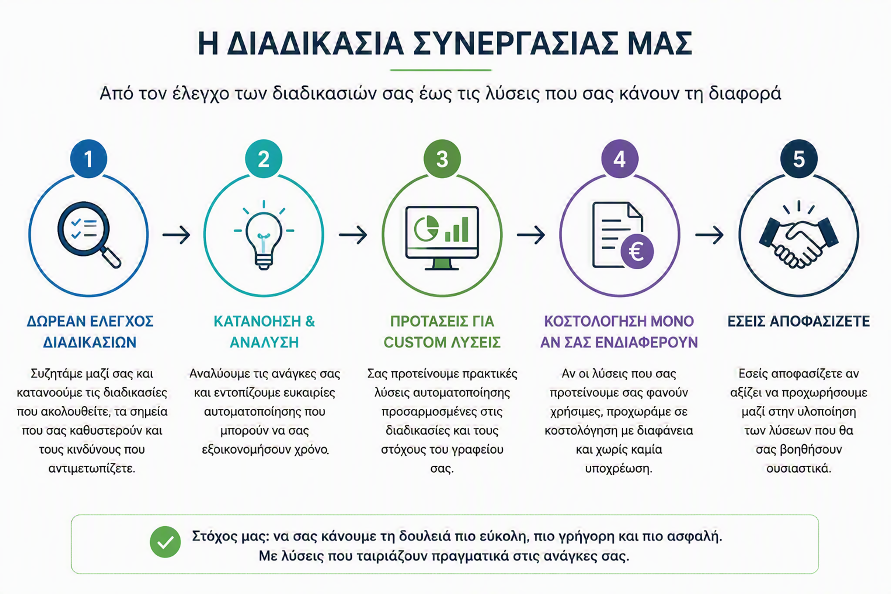

Οι υπηρεσίες μας
Οι υπηρεσίες μας χωρίζονται σε τρεις βασικές κατηγορίες, ώστε να καλύπτουμε ολοκληρωμένα τις ανάγκες της σύγχρονης επιχείρησης.
Ολοκληρωμένη υποστήριξη για κάθε στάδιο της επιχείρησης
Συνδυάζουμε λογιστική και φοροτεχνική τεχνογνωσία, συμβουλευτική καθοδήγηση και σύγχρονα εργαλεία αυτοματοποίησης.
01
Λογιστικά - Φοροτεχνικά
Λογιστική, φοροτεχνική, φορολογική και μισθοδοτική υποστήριξη για επιχειρήσεις και επαγγελματίες.
- Τήρηση λογιστικών βιβλίων όλων των κατηγοριών.
- Διαχείριση και έκδοση μισθοδοσίας επιχειρήσεων.
- Φορολογικές συμβουλές, φορολογικός σχεδιασμός και ίδρυση επιχειρήσεων.
Συμβουλευτικές Υπηρεσίες
Υποστήριξη σε θέματα οργάνωσης, οικονομικής παρακολούθησης, reporting και επιχειρησιακών αποφάσεων.
- Business Plan, αποτιμήσεις και χρηματοοικονομική συμβουλευτική.
- Financial modelling και μηνιαία παρακολούθηση.
- Business CheckUp για ρόλους, τμήματα και διαδικασίες.
Αυτοματοποίηση διαδικασιών
Custom αυτοματισμοί για επαναλαμβανόμενες εργασίες, ελέγχους, emails, reports και εσωτερικές ροές.
- Αυτοματισμοί σε Excel, emails, αρχεία και reports.
- Power BI dashboards για διοικητική πληροφόρηση.
- Λίστες ελέγχου, υπενθυμίσεις και παρακολούθηση εκκρεμοτήτων.
